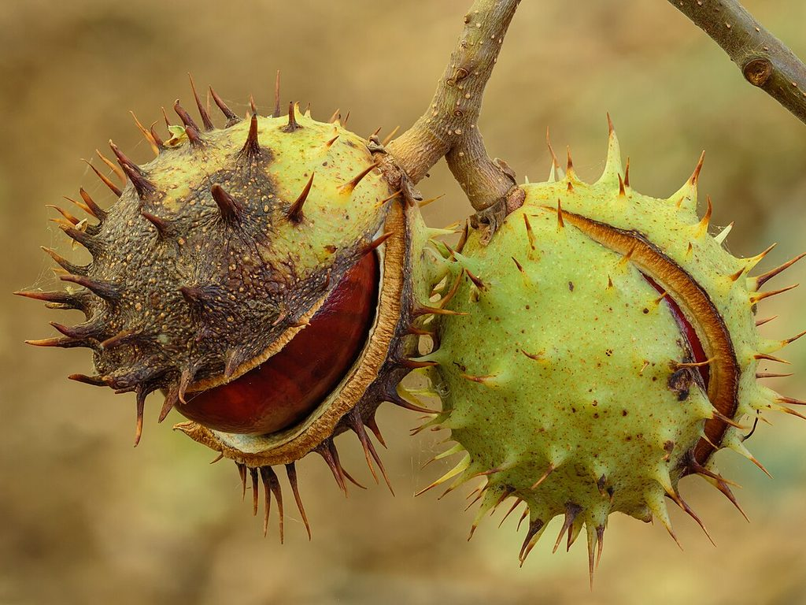

Cikk · Vadgesztenye
Vadgesztenye: fáradt, dagadt lábra talán segít, de nyersen mérgező
Most ősszel tele volt vele a park, a gyerekek zsebszámra hozták haza. Közben a patikában is láttam vadgesztenyés kapszulát és krémet nehéz lábra. Kíváncsi lettem, mit tud valójában, úgyhogy utánanéztem. Elmondom, mit találtam.

Mi ez, és mire árulják?
A vadgesztenye fája Délkelet-Európából származik, nálunk szinte minden parkban és fasorban ott van. A magja hasonlít a szelídgesztenyére, de keserű, és nem étel. Régen ízületi fájdalomra, duzzanatra, menstruációs görcsre és aranyérre használták.
Ma főleg a magból készült kivonatot árulják, mégpedig krónikus vénás elégtelenségre. Ez az, amikor a lábad vénái nem viszik vissza rendesen a vért a szív felé, és emiatt a lábad estére nehéz, fáj, viszket vagy megdagad. Elolvastam az amerikai NIH komplementer és integratív egészségügyi központjának (NCCIH) lapját, amelyet 2025 áprilisában frissítettek, és megnéztem azt az összefoglaló vizsgálatot is, amelyre a lap épít.
Mit mond a NIH?
Vénás panaszok Egy 2012-es Cochrane-áttekintés 17 vizsgálatot gyűjtött össze. Eszerint a magkivonat javíthatja a tüneteket: a legtöbb placebós vizsgálatban kevésbé fájt a láb, és kisebb lett a duzzanata. Egy vizsgálatban nagyjából ugyanannyit segített, mint a kompressziós harisnya.
De A szerzők maguk írják, hogy nagyobb és szigorúbb vizsgálatok kellenének, mielőtt ezt biztosra vennénk. A vizsgálatok ráadásul rövidek voltak, csak néhány hetesek.
Többi panasz Irritábilis bél szindrómára és a herezacskó visszértágulatával összefüggő férfi meddőségre is próbálták, de ezekről túl kevés az adat ahhoz, hogy bármit mondani lehessen.
Amire figyelj
Ez a legfontosabb rész. A nyers mag, a kéreg, a virág és a levél szájon át mérgező, mert van benne egy mérgező összetevő. Szóval a parkban szedett gesztenyét semmiképp ne edd meg, és ne főzz belőle teát. A boltban kapható, szabványosított kivonatból ezt az összetevőt kivonják. Ez rövid távon valószínűleg biztonságos, a vizsgálatokban legfeljebb 12 hétig szedték gond nélkül.
Általában jól tűrik, de okozhat szédülést, gyomorpanaszt, fejfájást vagy viszketést. Terhesség és szoptatás alatt nem tudjuk, biztonságos-e. Ha rendszeresen szedsz gyógyszert, főleg vérhígítót, előtte kérdezd meg az orvosodat vagy a gyógyszerészt.
Szerintem ha estére rendszeresen dagad a lábad, azzal először menj el orvoshoz, mert mögötte más is lehet, például szív- vagy vesepanasz. A mozgás, a láb felpolcolása és a kompressziós harisnya itt az alap. A kivonat legfeljebb kiegészítés lehet, nem helyettük.
Források
- National Center for Complementary and Integrative Health, NIH. Horse Chestnut. Frissítve: 2025. április. https://www.nccih.nih.gov/health/horse-chestnut
- Pittler MH, Ernst E. Horse chestnut seed extract for chronic venous insufficiency. Cochrane Database Syst Rev. 2012;11(11):CD003230. PubMed 23152216
- Martinez-Zapata MJ, Vernooij RW, Simancas-Racines D és mtsai. Phlebotonics for venous insufficiency. Cochrane Database Syst Rev. 2020;11(11):CD003229. PubMed 33141449